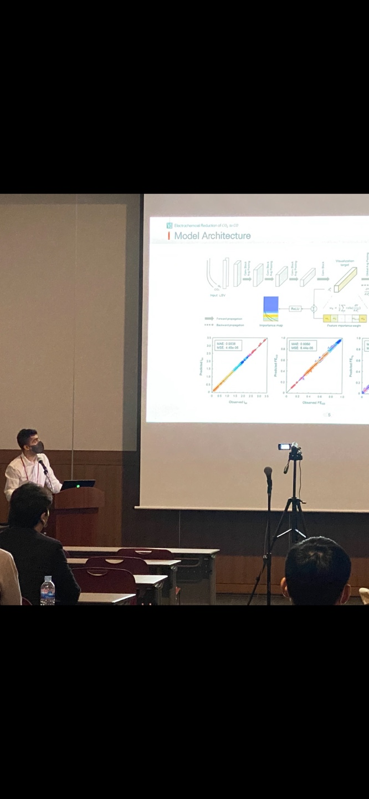

Thermal monitoring in WAAM
Studying infrared measurements and cooling between deposited layers. The aim is to evaluate adaptive waiting strategies while keeping part quality central to the comparison.
Research & engineering
PhD student in Production TechnologyUniversity West · Trollhättan, Sweden
I work with sensor data and machine learning to understand manufacturing processes. My focus is reliable measurements, thermal monitoring, and AI that can run close to the process.
01 / Current research
My research connects the quality of sensor measurements with the decisions made during manufacturing. In wire-arc additive manufacturing (WAAM), I am particularly interested in thermal behaviour and the waiting time between layers.
Studying infrared measurements and cooling between deposited layers. The aim is to evaluate adaptive waiting strategies while keeping part quality central to the comparison.
Using statistical learning and physical process knowledge to study sensor drift and temperature prediction. My work includes pyrometer calibration for press hardening.
Investigating edge AI for local monitoring and timely decisions. I am also exploring contact acoustic emission as a complementary signal to thermal measurements.
How can we shorten unnecessary waiting in metal 3D printing while maintaining reliable measurements and acceptable part quality?
02 / Selected publications
Published work on industrial temperature measurement and interpretable machine learning for electrochemical systems.
IEEE Sensors Applications Symposium (SAS), pp. 1–6.
H. Karasu, A. K. Mishra, R. Ali, F. Sikström, Y. Kucukyavuz and M. Machhammer, “Blind Calibration of Pyrometers for Press Hardening Industries with Process-Driven Constraints,” 2025 IEEE Sensors Applications Symposium (SAS), pp. 1–6, 2025. doi: 10.1109/SAS65169.2025.11105164.
ACS Catalysis, 15(3), pp. 2158–2170.
D. Shin, H. Karasu, K. Jang, C. Kim, K. Kim, D. Kim, Y. J. Sa, K. B. Lee, K. H. Chae, I. Moon, D. H. Won, J. Na and U. Lee, “Discovering the Origin of Catalyst Performance and Degradation of Electrochemical CO2 Reduction through Interpretable Machine Learning,” ACS Catalysis, vol. 15, no. 3, pp. 2158–2170, 2025. doi: 10.1021/acscatal.4c05530.
03 / Selected work
A selection of ongoing research, public repositories and earlier engineering work. Each project describes its focus and links to available code or research.
Using infrared measurements to study thermal behaviour in WAAM, with an interest in adaptive interlayer waiting and complementary acoustic monitoring.
Predicting thermocouple temperatures from pyrometer data. The pipeline covers data preparation, model comparison, visualisation and analysis of process conditions.
Machine-learning experiments with the public Gas Sensor Array Drift benchmark, comparing classification methods when measurements change over time.
A PyTorch implementation of ResNet-50 with and without the Convolutional Block Attention Module (CBAM), including feature-map visualisation.
Calculating adiabatic flame temperature from combustion energy balances as part of a furnace-analysis project.
This work examined the calculation of combustion temperatures for a wood-chip furnace. It connected physical assumptions, energy balances and numerical implementation.
A ROS class project at the Korea Institute of Science and Technology, exploring mobile-robot movement in multiple directions.
An introduction to mobile-robot motion and the Robot Operating System.

04 / Background
I am a PhD student in Production Technology at University West in Sweden. I work across sensor-data analysis, machine learning and manufacturing, with an interest in making models useful under real process conditions.
My earlier research at the Korea Institute of Science and Technology (KIST) focused on interpretable deep learning for electrochemical systems. Alongside this work, I have explored robotics and engineering calculations in Python.
I care about understanding what a model learns, how measurements change, and whether a method remains useful beyond the conditions it was trained on.
Personal perspective
“Previously, I thought intelligence alone could reshape the world. Now, wisdom has taught me the power lies in transforming myself.”
05 / Get in touch
I welcome conversations about process monitoring, sensor calibration, interpretable models and AI for manufacturing.